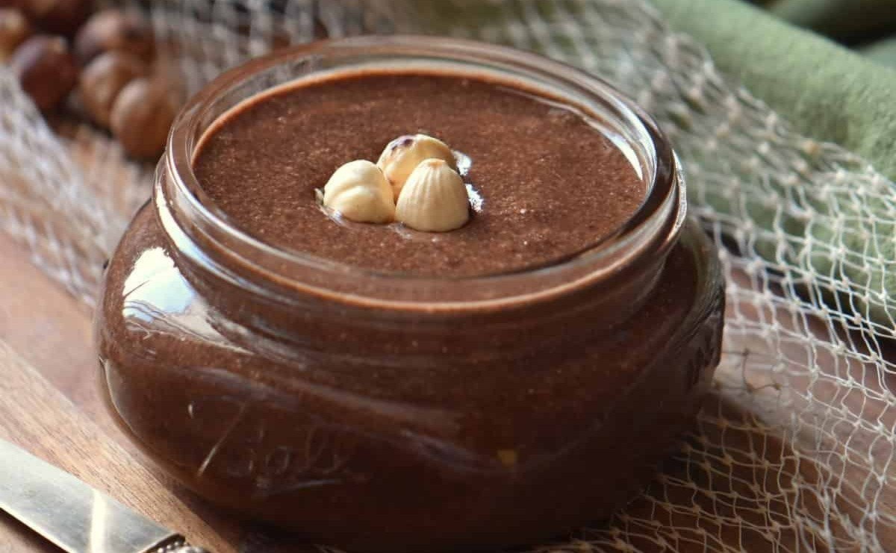

приготовление:
-
Разогреть духовку до 165–170 °C. Выложить 140 г фундука и 140 г миндаля одним слоем на противень и обжаривать 8–10 минут, один раз перемешав. Важно: орехи должны попасть в блендер ещё тёплыми, не остужать полностью.
-
Переложить горячие орехи в мощный блендер или комбайн. Измельчать на высокой скорости, делая паузы каждые 30–40 секунд, пока масса не пройдёт все стадии: от крошки и «влажного песка» до густой пасты и затем жидкого орехового масла. Обычно этот этап занимает 5–10 минут. Готовая ореховая масса блестит, легко движется по чаше, стекает с лопатки и не крошится совсем.
-
Отдельно растопить на водяной бане (или очень аккуратно в микроволновке) 32 г какао-массы, 20 г масла ши и 10 г кокосового масла. После добавить в нее же 8 г какао-порошка и размешать до гладкой массы. Смесь должна быть тёплой и текучей, но не горячей.
-
Влить шоколадно-масляную смесь в ореховое масло. Добавить 40 г сиропа агавы и ¼ ч. л. морской соли. Проблендерить ещё 1–2 минуты до полностью гладкой, кремовой текстуры.
-
Переложить пасту в чистые сухие банки и дать остыть при комнатной температуре. После остывания текстура стабилизируется. Хранить пасту до 2 недель при комнатной температуре. В холодильнике она хранится дольше, но становится более плотной.